Graph Linear Equations in Two Variables
Recognize the Relationship Between the Solutions of an Equation and its Graph
In the previous section, we found several solutions to the equation . They are listed in Table 1. So, the ordered pairs , , and are some solutions to the equation . We can plot these solutions in the rectangular coordinate system as shown in Figure 1.
| 0 | 3 | |
| 2 | 0 | |
| 1 | ||

Notice how the points line up perfectly? We connect the points with a line to get the graph of the equation . See Figure 2. Notice the arrows on the ends of each side of the line. These arrows indicate the line continues.

Every point on the line is a solution of the equation. Also, every solution of this equation is a point on this line. Points not on the line are not solutions.
Notice that the point whose coordinates are is on the line shown in Figure 3. If you substitute and into the equation, you find that it is a solution to the equation.

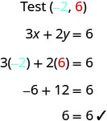
So the point is a solution to the equation . (The phrase “the point whose coordinates are ” is often shortened to “the point .”)
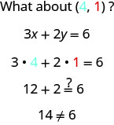
So is not a solution to the equation . Therefore, the point is not on the line. See Figure 2. This is an example of the saying, “A picture is worth a thousand words.” The line shows you all the solutions to the equation. Every point on the line is a solution of the equation. And, every solution of this equation is on this line. This line is called the graph of the equation .
The graph of is shown.

For each ordered pair, decide:
ⓐ Is the ordered pair a solution to the equation?
ⓑ Is the point on the line?
A B C D
Solution
Solution
Substitute the x- and y- values into the equation to check if the ordered pair is a solution to the equation.
-
ⓐ
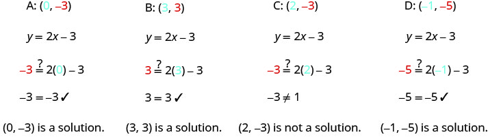
-
ⓑ Plot the points A , B , C , and D .
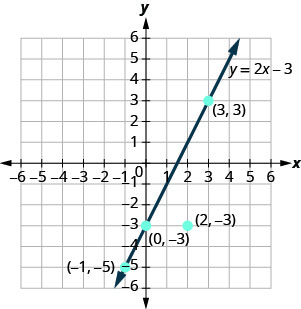
The points , , and are on the line , and the point is not on the line.
The points that are solutions to are on the line, but the point that is not a solution is not on the line.
Graph a Linear Equation by Plotting Points
There are several methods that can be used to graph a linear equation. The method we used to graph is called plotting points, or the Point–Plotting Method.
How To Graph an Equation By Plotting Points
Graph the equation by plotting points.
Solution
Solution
![The figure shows the three step procedure for graphing a line from the equation using the example equation y equals 2x minus 1. The first step is to “Find three points whose coordinates are solutions to the equation. Organize the solutions in a table”. The remark is made that “You can choose any values for x or y. In this case, since y is isolated on the left side of the equation, it is easier to choose values for x”. The work for the first step of the example is shown through a series of equations aligned vertically. From the top down, the equations are y equals 2x plus 1, x equals 0 (where the 0 is blue), y equals 2x plus 1, y equals 2(0) plus 1 (where the 0 is blue), y equals 0 plus 1, y equals 1, x equals 1 (where the 1 is blue), y equals 2x plus 1, y equals 2(1) plus 1 (where the 1 is blue), y equals 2 plus 1, y equals 3, x equals negative 2 (where the negative 2 is blue), y equals 2x plus 1, y equals 2(negative 2) plus 1 (where the negative 2 is blue), y equals negative 4 plus 1, y equals negative 3. The work is then organized in a table. The table has 5 rows and 3 columns. The first row is a title row with the equation y equals 2x plus 1. The second row is a header row and it labels each column. The first column header is “x”, the second is “y” and the third is “(x, y)”. Under the first column are the numbers 0, 1, and negative 2. Under the second column are the numbers 1, 3, and negative 3. Under the third column are the ordered pairs (0, 1), (1, 3), and (negative 2, negative 3).](../../media/CNX_ElemAlg_Figure_04_02_044a_img_new.jpg)
![The second step is to “Plot the points in a rectangular coordinate system. Check that the points line up. If they do not, carefully check your work!” For the example the points are (0, 1), (1, 3), and (negative 2, negative 3). A graph shows the three points on the x y-coordinate plane. The x-axis of the plane runs from negative 7 to 7. The y-axis of the plane runs from negative 7 to 7. Dots mark off the three points at (0, 1), (1, 3), and (negative 2, negative 3). The question “Do the points line up?” is stated and followed with the answer “Yes, the points line up.”](../../media/CNX_ElemAlg_Figure_04_02_044b_img_new.jpg)
![The third step of the procedure is “Draw the line through the three points. Extend the line to fill the grid and put arrows on both ends of the line.” A graph shows a straight line drawn through three points on the x y-coordinate plane. The x-axis of the plane runs from negative 7 to 7. The y-axis of the plane runs from negative 7 to 7. Dots mark off the three points at (0, 1), (1, 3), and (negative 2, negative 3). A straight line goes through all three points. The line has arrows on both ends pointing to the edge of the figure. The line is labeled with the equation y equals 2x plus 1. The statement “This line is the graph of y equals 2x plus 1” is included next to the graph.](../../media/CNX_ElemAlg_Figure_04_02_044c_img_new.jpg)
The steps to take when graphing a linear equation by plotting points are summarized below.
It is true that it only takes two points to determine a line, but it is a good habit to use three points. If you only plot two points and one of them is incorrect, you can still draw a line but it will not represent the solutions to the equation. It will be the wrong line.
If you use three points, and one is incorrect, the points will not line up. This tells you something is wrong and you need to check your work. Look at the difference between part (a) and part (b) in Figure 4.

Let’s do another example. This time, we’ll show the last two steps all on one grid.
Graph the equation .
Solution
Solution
Find three points that are solutions to the equation. Here, again, it’s easier to choose values for . Do you see why? 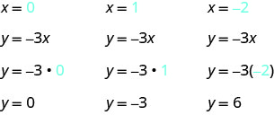
Plot the points, check that they line up, and draw the line.

When an equation includes a fraction as the coefficient of , we can still substitute any numbers for . But the math is easier if we make ‘good’ choices for the values of . This way we will avoid fraction answers, which are hard to graph precisely.
Graph the equation .
Solution
Solution
Find three points that are solutions to the equation. Since this equation has the fraction as a coefficient of we will choose values of carefully. We will use zero as one choice and multiples of 2 for the other choices. Why are multiples of 2 a good choice for values of ? 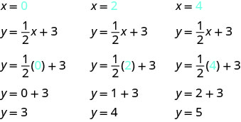
The points are shown in Table 3.
| 0 | 3 | |
| 2 | 4 | |
| 4 | 5 | |
Plot the points, check that they line up, and draw the line.

So far, all the equations we graphed had given in terms of . Now we’ll graph an equation with and on the same side. Let’s see what happens in the equation . If what is the value of ?

This point has a fraction for the x- coordinate and, while we could graph this point, it is hard to be precise graphing fractions. Remember in the example , we carefully chose values for so as not to graph fractions at all. If we solve the equation for , it will be easier to find three solutions to the equation.
The solutions for , , and are shown in the Table 4. The graph is shown in Figure 5.
| 0 | 3 | |
| 1 | 1 | |
| 5 | ||

Can you locate the point , which we found by letting , on the line?
Graph the equation .
Solution
Solution
| Find three points that are solutions to the equation. | |
| First, solve the equation for . |
We’ll let be 0, 1, and to find 3 points. The ordered pairs are shown in Table 6. Plot the points, check that they line up, and draw the line. See Figure 6.
| 0 | ||
| 1 | ||
| 2 | ||

If you can choose any three points to graph a line, how will you know if your graph matches the one shown in the answers in the book? If the points where the graphs cross the x- and y-axes are the same, the graphs match!
The equation in Example 5 was written in standard form, with both and on the same side. We solved that equation for in just one step. But for other equations in standard form it is not that easy to solve for , so we will leave them in standard form. We can still find a first point to plot by letting and solving for . We can plot a second point by letting and then solving for . Then we will plot a third point by using some other value for or .
Graph the equation .
Solution
Solution
| Find three points that are solutions to the equation. | |
| First, let . | |
| Solve for . | |
| Now let . | |
| Solve for . | |
| We need a third point. Remember, we can choose any value for or . We'll let . | |
| Solve for . |
We list the ordered pairs in Table 8. Plot the points, check that they line up, and draw the line. See Figure 7.
| 0 | ||
| 3 | 0 | |
| 6 | 2 | |

Graph Vertical and Horizontal Lines
Can we graph an equation with only one variable? Just and no , or just without an ? How will we make a table of values to get the points to plot?
Let’s consider the equation . This equation has only one variable, . The equation says that is always equal to , so its value does not depend on . No matter what is, the value of is always .
So to make a table of values, write in for all the values. Then choose any values for . Since does not depend on , you can choose any numbers you like. But to fit the points on our coordinate graph, we’ll use 1, 2, and 3 for the y-coordinates. See Table 9.
| 1 | ||
| 2 | ||
| 3 | ||
Plot the points from Table 9 and connect them with a straight line. Notice in Figure 8 that we have graphed a vertical line.
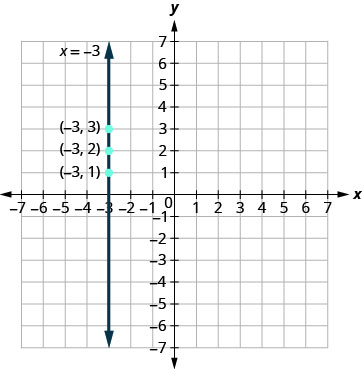
Graph the equation .

What if the equation has but no ? Let’s graph the equation . This time the y- value is a constant, so in this equation, does not depend on . Fill in 4 for all the ’s in Table 11 and then choose any values for . We’ll use 0, 2, and 4 for the x-coordinates.
| 0 | 4 | |
| 2 | 4 | |
| 4 | 4 | |
The graph is a horizontal line passing through the y-axis at 4. See Figure 10.

Graph the equation

The equations for vertical and horizontal lines look very similar to equations like What is the difference between the equations and ?
The equation has both and . The value of depends on the value of . The y-coordinate changes according to the value of . The equation has only one variable. The value of is constant. The y-coordinate is always 4. It does not depend on the value of . See Table 13.
| 0 | 0 | 0 | 4 | |||
| 1 | 4 | 1 | 4 | |||
| 2 | 8 | 2 | 4 | |||

Notice, in Figure 12, the equation gives a slanted line, while gives a horizontal line.
Graph and in the same rectangular coordinate system.

Key Concepts
-
Graph a Linear Equation by Plotting Points
- Find three points whose coordinates are solutions to the equation. Organize them in a table.
- Plot the points in a rectangular coordinate system. Check that the points line up. If they do not, carefully check your work!
- Draw the line through the three points. Extend the line to fill the grid and put arrows on both ends of the line.
Practice Makes Perfect
Recognize the Relationship Between the Solutions of an Equation and its Graph
In the following exercises, for each ordered pair, decide:
ⓐ Is the ordered pair a solution to the equation? ⓑ Is the point on the line?
- ⓐ
- ⓑ
- ⓒ
- ⓓ

Solution
ⓐ yes; yes ⓑ no; no ⓒ yes; yes ⓓ yes; yes
- ⓐ
- ⓑ
- ⓒ
- ⓓ

- ⓐ
- ⓑ
- ⓒ
- ⓓ

Solution
ⓐ yes; yes ⓑ yes; yes ⓒ yes; yes ⓓ no; no
- ⓐ
- ⓑ
- ⓒ
- ⓓ

Graph a Linear Equation by Plotting Points
In the following exercises, graph by plotting points.
Solution

Solution

Solution
![The figure shows a straight line drawn on the x y-coordinate plane. The x-axis of the plane runs from negative 12 to 12. The y-axis of the plane runs from negative 12 to 12. The straight line goes through the points (negative 10, negative 8), (negative 9, negative 7), (negative 8, negative 6), (negative 7, negative 5), (negative 6, negative 4), (negative 5, negative 3), (negative 4, negative 2), (negative 3, negative 1), (negative 2, 0), (negative 1, 1), (0, 2), (1, 3), (2, 4), (3, 5), (4, 6), (5, 7), (6, 8), (7, 9), and (8, 10).](../../media/CNX_ElemAlg_Figure_04_02_205_img_new.jpg)
Solution
![The figure shows a straight line drawn on the x y-coordinate plane. The x-axis of the plane runs from negative 12 to 12. The y-axis of the plane runs from negative 12 to 12. The straight line goes through the points (negative 10, 7), (negative 9, 6), (negative 8, 5), (negative 7, 4), (negative 6, 3), (negative 5, 2), (negative 4, 1), (negative 3, 0), (negative 2, negative 1), (negative 1, negative 2), (0, negative 3), (1, negative 4), (2, negative 5), (3, negative 6), (4, negative 7), (5, negative 8), (6, negative 9), and (7, negative 10).](../../media/CNX_ElemAlg_Figure_04_02_207_img_new.jpg)
Solution

Solution
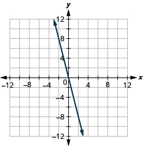
Solution

Solution

Solution

Solution
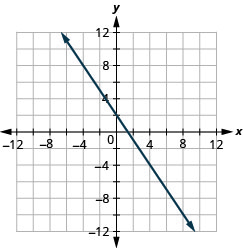
Solution
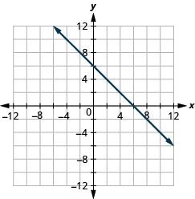
Solution
![The figure shows a straight line drawn on the x y-coordinate plane. The x-axis of the plane runs from negative 12 to 12. The y-axis of the plane runs from negative 12 to 12. The straight line goes through the points (negative 10, 7), (negative 9, 6), (negative 8, 5), (negative 7, 4), (negative 6, 3), (negative 5, 2), (negative 4, 1), (negative 3, 0), (negative 2, negative 1), (negative 1, negative 2), (0, negative 3), (1, negative 4), (2, negative 5), (3, negative 6), (4, negative 7), (5, negative 8), (6, negative 9), and (7, negative 10).](../../media/CNX_ElemAlg_Figure_04_02_223_img_new.jpg)
Solution
![The figure shows a straight line drawn on the x y-coordinate plane. The x-axis of the plane runs from negative 12 to 12. The y-axis of the plane runs from negative 12 to 12. The straight line goes through the points (negative 8, negative 10), (negative 7, negative 9), (negative 6, negative 8), (negative 5, negative 7), (negative 4, negative 6), (negative 3, negative 5), (negative 2, negative 4), (negative 1, negative 3), (0, negative 2), (1, negative 1), (2, 0), (3, 1), (4, 2), (5, 3), (6, 4), (7, 5), (8, 6), (9, 7), and (10, 8).](../../media/CNX_ElemAlg_Figure_04_02_225_img_new.jpg)
Solution
![The figure shows a straight line drawn on the x y-coordinate plane. The x-axis of the plane runs from negative 12 to 12. The y-axis of the plane runs from negative 12 to 12. The straight line goes through the points (negative 9, negative 8), (negative 8, negative 7), (negative 7, negative 6), (negative 6, negative 5), (negative 5, negative 4), (negative 4, negative 3), (negative 3, negative 2), (negative 2, negative 1), (negative 1, 0), (0, 1), (1, 2), (2, 3), (3, 4), (4, 5), (5, 6), (6, 7), (7, 8), (8, 9), and (9, 10).](../../media/CNX_ElemAlg_Figure_04_02_227_img_new.jpg)
Solution
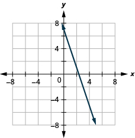
Solution

Solution
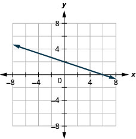
Solution
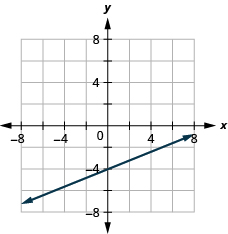
Solution

Solution

Solution

Solution

Graph Vertical and Horizontal Lines
In the following exercises, graph each equation.
Solution

Solution
Solution
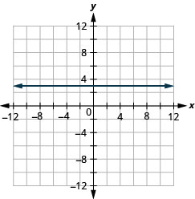
Solution
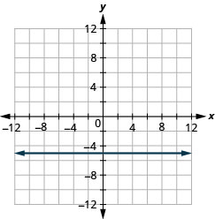
Solution

Solution

In the following exercises, graph each pair of equations in the same rectangular coordinate system.
and
Solution
![The figure shows a two straight lines drawn on the same x y-coordinate plane. The x-axis of the plane runs from negative 12 to 12. The y-axis of the plane runs from negative 12 to 12. One line is a straight horizontal line going through the points (negative 4, 2) (0, 2), (4, 2), and all other points with second coordinate 2. The other line is a slanted line going through the points (negative 5, negative 10), (negative 4, negative 8), (negative 3, negative 6), (negative 2, negative 4), (negative 1, negative 2), (0, 0), (1, 2), (2, 4), (3, 6), (4, 8), and (5, 10).](../../media/CNX_ElemAlg_Figure_04_02_253_img_new.jpg)
and
and
Solution
![The figure shows a two straight lines drawn on the same x y-coordinate plane. The x-axis of the plane runs from negative 12 to 12. The y-axis of the plane runs from negative 12 to 12. One line is a straight horizontal line going through the points (negative 4, negative one half) (0, negative one half), (4, negative one half), and all other points with second coordinate negative one half. The other line is a slanted line going through the points (negative 10, 5), (negative 8, 4), (negative 6, 3), (negative 4, 2), (negative 2, 1), (0, 0), (1, negative 2), (2, negative 4), (3, negative 6), (4, negative 8), and (5, negative 10).](../../media/CNX_ElemAlg_Figure_04_02_255_img_new.jpg)
and
Mixed Practice
In the following exercises, graph each equation.
Solution

Solution

Solution
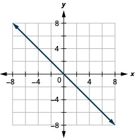
Solution

Solution
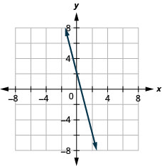
Solution

Solution

Solution

Everyday Math
Motor home cost. The Robinsons rented a motor home for one week to go on vacation. It cost them $594 plus $0.32 per mile to rent the motor home, so the linear equation gives the cost, , for driving miles. Calculate the rental cost for driving 400, 800, and 1200 miles, and then graph the line.
Solution
$722, $850, $978

Weekly earnings. At the art gallery where he works, Salvador gets paid $200 per week plus 15% of the sales he makes, so the equation gives the amount, , he earns for selling dollars of artwork. Calculate the amount Salvador earns for selling $900, $1600, and $2000, and then graph the line.
Writing Exercises
Explain how you would choose three x- values to make a table to graph the line .
Solution
Answers will vary.
What is the difference between the equations of a vertical and a horizontal line?
Self Check
ⓐ After completing the exercises, use this checklist to evaluate your mastery of the objectives of this section.
![This table has 4 rows and 4 columns. The first row is a header row and it labels each column. The first column header is “I can…”, the second is “Confidently”, the third is “With some help”, and the fourth is “No, I don’t get it”. Under the first column are the phrases “…recognize the relation between the solutions of an equation and its graph.”, “…graph a linear equation by plotting points.”, and “…graph vertical and horizontal lines.”. The other columns are left blank so that the learner may indicate their mastery level for each topic.](../../media/CNX_ElemAlg_Figure_04_02_283_img_new.jpg)
ⓑ After reviewing this checklist, what will you do to become confident for all goals?